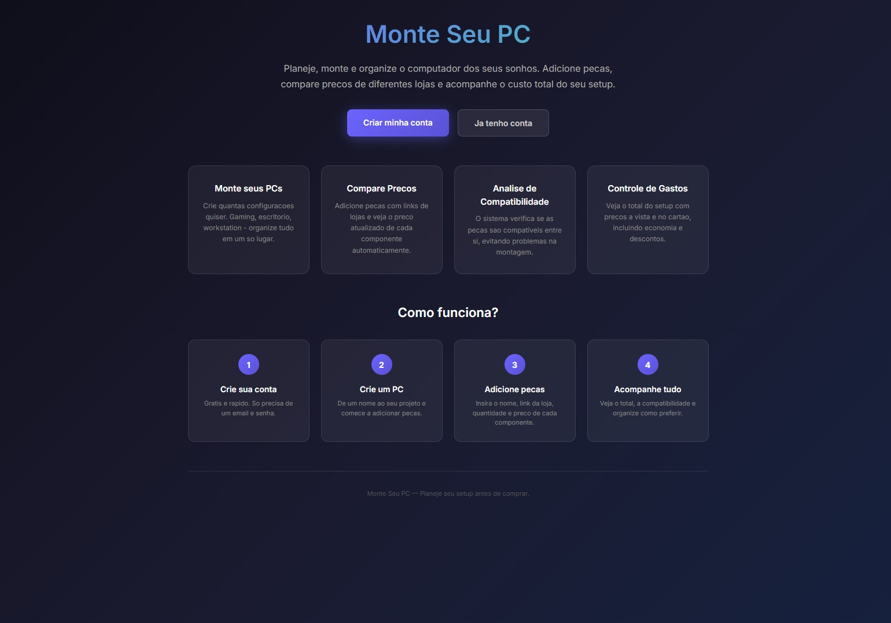
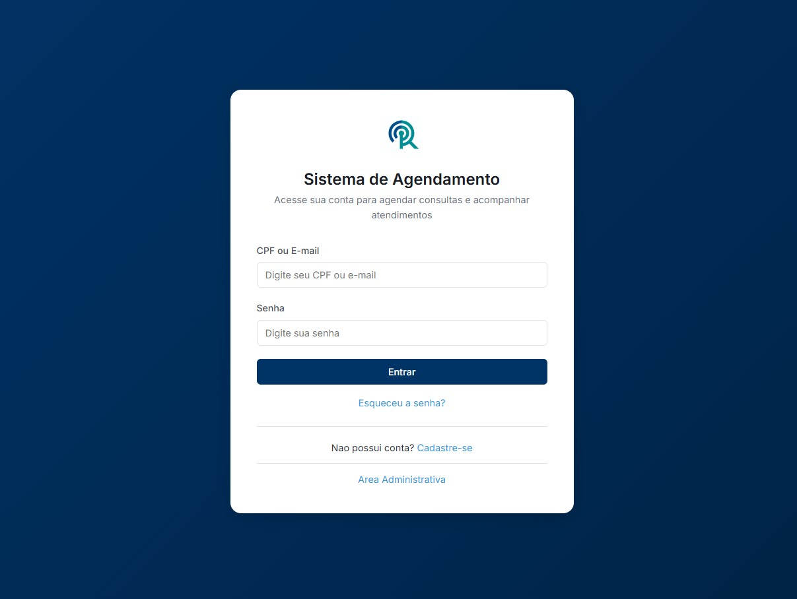
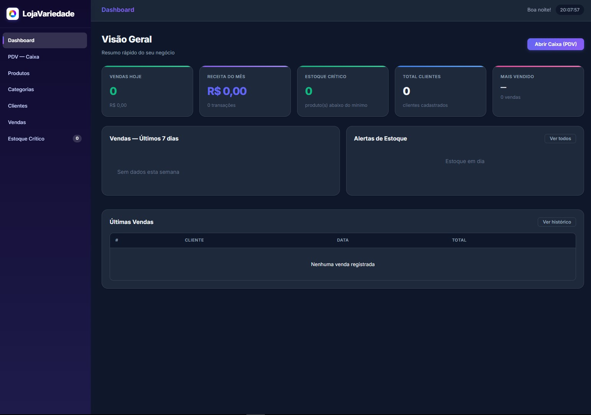

Build Your PC
Programa para solucionar a constante alteração dos preços das lojas, buscando automaticamente
Ver projeto →Portfólio
Desenvolvedor Full-Stack · Game Developer · Analista De Dados · Desenvolvedor De Softwares
Meu nome é Mateus De Boit Dos Santos e sou Desenvolvedor Full-Stack e Game Developer Indie. Tenho experiência no desenvolvimento de sistemas web utilizando HTML, CSS, JavaScript, PHP e bancos de dados SQL, criando soluções completas e funcionais para diferentes necessidades. Além do desenvolvimento web, trabalho com criação de jogos utilizando Unity e GameMaker, bem como modelagem e produção de recursos 3D no Blender. Gosto de transformar ideias em projetos, seja desenvolvendo um e-commerce para impulsionar as vendas de uma empresa, criando sistemas que automatizam processos ou produzindo jogos por paixão, criatividade e expressão artística. Estou sempre em busca de novos desafios e oportunidades para aprender, inovar e desenvolver soluções que gerem valor para pessoas e empresas.

Programa para solucionar a constante alteração dos preços das lojas, buscando automaticamente
Ver projeto →
Um jogo de terror inspirado em Fears to Fathom onde voce é uma reportes e vai investigar uma floresta que possui um culto misterioso lá
Ver projeto →
Um site para melhorar o agendamento de diferentes hospitais e postos de saúde, com o objetivo de padronizar, facilitar e trazer uma melhor confiança para o paciente
Ver projeto →
Site em formato de dashboard para melhor administração dos produtos da lojá
Ver projeto →Entender o briefing, o público e as restrições reais do problema.
Levantar referências, ferramentas e abordagens técnicas possíveis.
Prototipar, construir e iterar com testes reais.
Ajustes finais, revisão e entrega pronta para feedback.